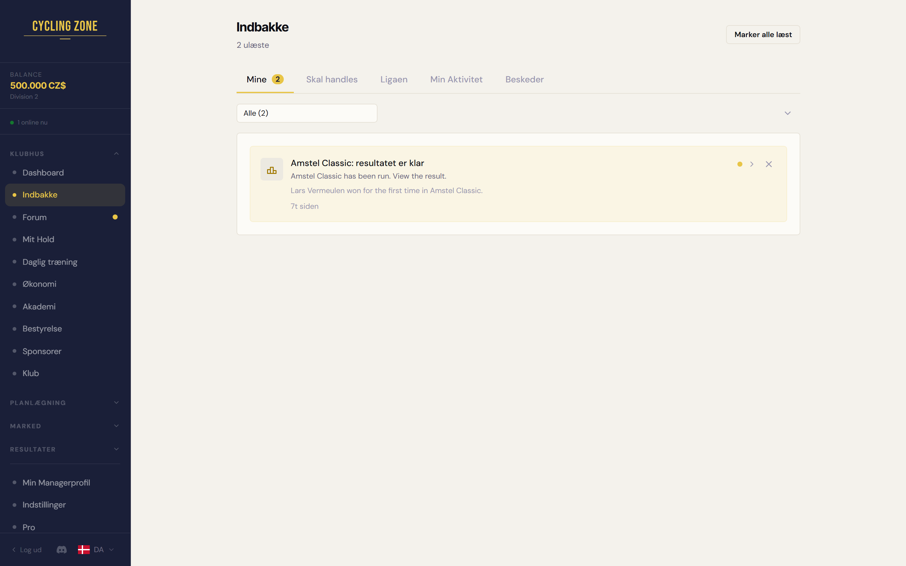

Indbakken: ét afviklet løb giver én linje
Amstel Classic, hvor Lars Vermeulen vandt sit første løb. Dansk sprog, 1440 px, lyst tema.
I dag

1
- 1Ét løb giver to beskeder: resultatet og rytterens første sejr.
Efter

1
2
3
- 1Én linje pr. løb. Løbet er overskriften.
- 2Rytterens første sejr står lige under, uden at man skal folde noget ud.
- 3Én tid i stedet for to.
Teksterne i kortene er dem backenden sender i dag. Billedet er skåret til selve indbakke-kortet.